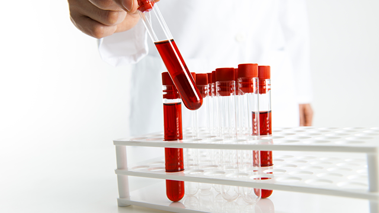
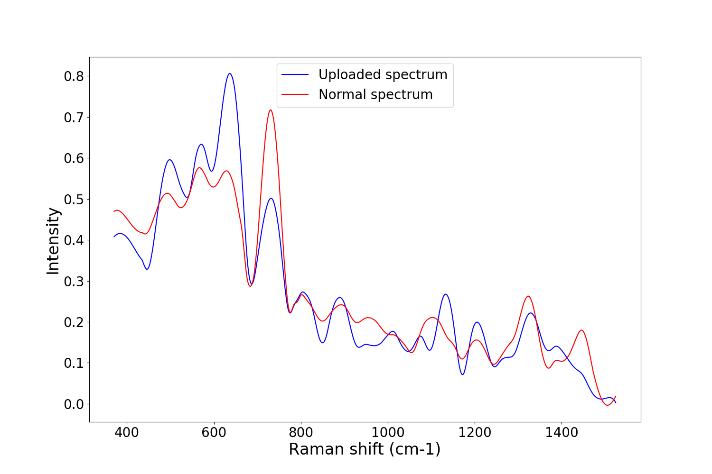
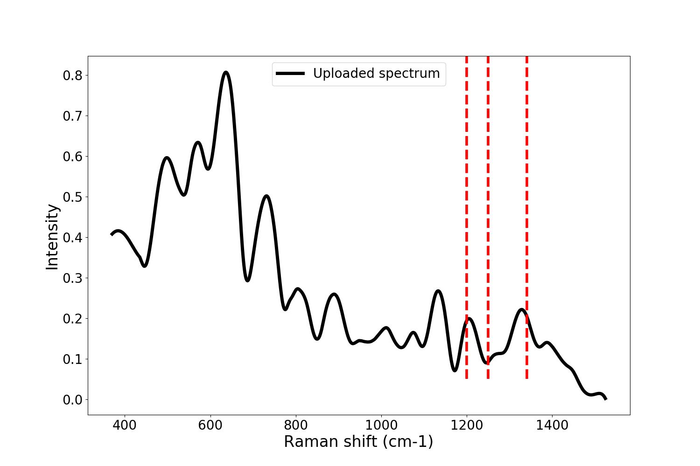

Toggle navigation
Logo
Home
About
Products
Services
Engage
Pontificate
Synergize
Search
LIVE-r
Blood test for symptoms of Liver cancer.

Spectrum result shows {{int_var}}.
Comparision to diseased spectrum

Biomarkers of diseased spectrum
